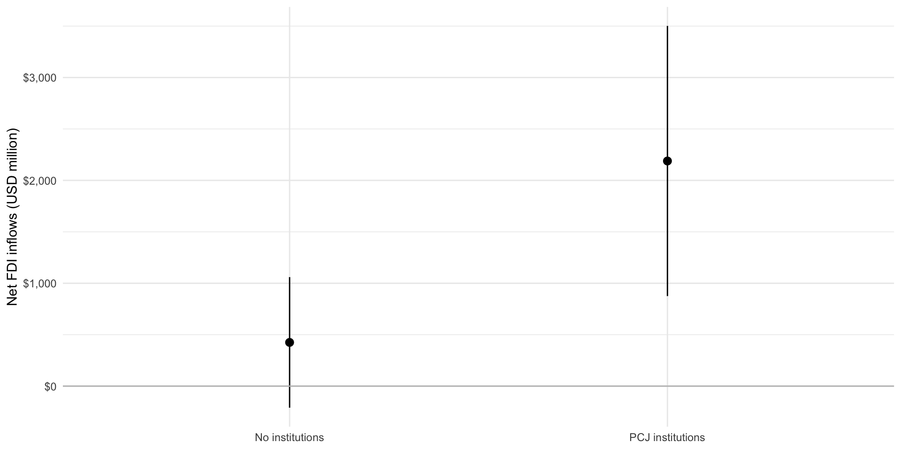

library(tidyverse)
library(broom)
library(modelsummary)
library(marginaleffects)
library(janitor)
library(ggdist)
library(polisciols)Model Specification
Set up
The economic benefits of justice
Appel and Loyle (2012) (two wonderful UMD alumni) explore the determinants of foreign direct investment (FDI) flows into and out of post-conflict states. States that are emerging from civil war often have an acute need for foreign and stable sources of capital. However, multinational corporations and other foreign commercial actors are likely to view post-conflict states as high risk countries in which to invest: the risk of a return to violence and instability is often high in the immediate aftermath of a civil war. Understanding this, leaders of post-conflict states often attempt to decrease this perceived risk.
Appel and Loyle argue that leaders can successfully do this by establishing post-conflict justice (PCJ) institutions. These institutions impose both domestic and reputational costs on post-conflict leaders. These costs allow leaders to signal their commitment to minimizing the risk of a return to violence and instability to foreign commercial actors. This is a great paper and I highly encourage you to take a look at their argument in detail.
Their argument focuses on leaders’ attempts to change foreign commercial actors’ perceptions of the risk of a return to violence. We cannot directly observe these commercial actors’ perceptions. However, we can observe the outcome of these perceptions: investment. If Appel and Loyle’s argument is correct, we should observe higher levels of FDI investment coming into post-conflict states that establish PCJ institutions compared to those that do not, on average and holding all else constant.
Appel and Loyle find strong evidence of this. We will replicate and modify this empirical work. In doing so, we will become more familiar with the underlying mechanics of multiple linear regression and strengthen our ability to interpret these models.
Let’s get started!
Net FDI inflows to post-conflict states
Appel and Loyle provide us with data on 95 different post-conflict states. These include all states that had internal armed conflicts, including internationalized conflicts, that resulted in at least 25 battle-related deaths and were settled between 1970 and 2001.
We can access these data through polisciols::ebj:
head(ebj) id ccode country_name pcj net_fdi_inflows gdp_per_capita
1 71 41 Haiti No institutions -9.8000 1182.498
2 71 41 Haiti No institutions 6.6000 1088.680
3 154 52 Trinidad & Tobago No institutions 510.1589 7742.736
4 102 70 Mexico No institutions -340.6904 6894.704
5 102 70 Mexico No institutions 6460.7998 7780.053
6 67 90 Guatemala PCJ institutions 431.3800 3061.873
gdp gdp_per_capita_growth ex_rate_fluc cap_account_openness labor
1 8407079981 -2.1324685 0.000000 -0.7681904 68.5
2 8055393763 -14.8832922 1.776603 -0.0871520 67.9
3 9542938026 1.9370972 0.000000 -1.1305820 55.2
4 628418000000 -7.8634830 1.978028 1.1804080 59.8
5 730752000000 5.2345648 1.129686 1.1804080 61.3
6 31339424077 0.6277104 1.046489 1.2642760 63.1
f_life_exp polity2 pol_constraints conflict_duration damage
1 55.02233 7 0.00 1 0.000000
2 56.09750 -7 0.00 1 12.855902
3 72.61483 9 0.84 1 -2.787351
4 74.67104 4 0.39 1 0.000000
5 75.23493 6 0.39 1 -8.949999
6 67.46067 8 0.43 31 -43.714600
peace_agreement victory cold_war
1 No agreement Victory Post-Cold War
2 No agreement Victory Post-Cold War
3 No agreement Victory Post-Cold War
4 Peace agreement No victory Post-Cold War
5 No agreement No victory Post-Cold War
6 Peace agreement No victory Post-Cold WarThey focus on the 10-year period immediately following the conflict’s conclusion. This is the period in which we would expect foreign commercial actors to perceive the risk of a return to violence and instability to be greatest and; therefore, the period in which leaders’ attempts to quash these perceptions to be most relevant.
Therefore, each row in this data set represents a single post-conflict state. The data is generally a summary of the 10-years post-conflict. For example net_fdi_inflows provides us with the total net FDI inflows each post-conflict state received in that 10-year period.
Tip
You can learn more about each variable using the following command:
?ebjTheir outcome of interest is net FDI inflows. Remember, if their argument is correct we would expect post-conflict states that have established a PCJ institution to have higher net FDI inflows than than states that did not. Let’s take a look at those net inflows:
summary(ebj$net_fdi_inflows) Min. 1st Qu. Median Mean 3rd Qu. Max.
-1858.914 -0.572 38.290 759.146 408.250 24836.787 ggplot(ebj, aes(x = net_fdi_inflows)) +
geom_histogram() +
theme_minimal() +
scale_x_continuous(labels = scales::dollar)
Note
There appears to be a clear outlier: a net FDI inflow of $24,836.79 million for Russia. You can see that this is pulling up the average net FDI inflows well above the median inflow across our group of post-conflict states. We will keep this in because this is not the focus of today’s session, but I would encourage you to explore whether these findings are sensitive to its inclusion.
We learn from this that some states have greater FDI outflows than inflows (resulting in negative net FDI inflows). Indonesia had the greatest negative inflow, with net inflows of -$1,858.91 million.
Other states received greater foreign investments than they invested elsewhere, resulting in positive net FDI inflows. In fact, on average, post-conflict states received more inflows than outflows.
PCJ institutions
Appel and Loyle focus on whether states that have PCJ institutions successfully attract greater net FDI inflows than those that do not. Therefore, their main explanatory variable is the existance of PCJ institutions.
This variable, pcj, indicates whether the the state established a PCJ institution within five years following the end of the conflict. What proportion of states did this?
tabyl(ebj, pcj) pcj n percent
No institutions 77 0.8105263
PCJ institutions 18 0.1894737The majority of post-conflict states did not have PCJ institutions.
Relationship between PCJ institutions and net FDI inflows
Of the states that do have a PCJ institution, do they tend to receive higher net FDI inflows than their less reconciliatory counterparts?
ebj |>
group_by(pcj) |>
summarise(avg_net_fdi = mean(net_fdi_inflows))# A tibble: 2 × 2
pcj avg_net_fdi
<fct> <dbl>
1 No institutions 425.
2 PCJ institutions 2189.Yes! States that established a PCJ institution received higher net FDI inflows, on average, than those states that did not. This difference looks large! It’s $1,763.52 million in net inflows!
But what are the chances this difference is simply the product of chance? We can formally test this question using linear regression:
m <- lm(net_fdi_inflows ~ pcj, data = ebj)
modelsummary(m,
coef_rename = c("pcjPCJ institutions" = "PCJ institutions established"),
stars = T)| (1) | |
|---|---|
| (Intercept) | 425.006 |
| (323.874) | |
| PCJ institutions established | 1763.517* |
| (744.049) | |
| Num.Obs. | 95 |
| R2 | 0.057 |
| R2 Adj. | 0.047 |
| AIC | 1784.5 |
| BIC | 1792.2 |
| Log.Lik. | −889.253 |
| F | 5.618 |
| RMSE | 2811.91 |
| + p < 0.1, * p < 0.05, ** p < 0.01, *** p < 0.001 |
According to this model, what is the average predicted net FDI inflows for countries that did not establish PCJ institution?
Answer
Post-conflict states that did not establish a PCJ institution received, on average, net FDI inflows of $425.01 million in the 10-year period after conflict.
To get this, I looked at the intercept coefficient which tells us the average predicted value of our outcome variable when all explanatory variables are equal to zero or their baseline category.
According to this model, what is the average predicted net FDI inflows for countries that did establish PCJ institution?
Answer
In contrast, states that did establish PCJ institution received, on average, net FDI inflows of $2,188.52 million.
In other words:
\[ Average\ net\ FDI\ inflows = \beta_0 + \beta_1 Institution\ established + \epsilon \]
When an institution was established (i.e. \(Institution\ established = 1\)):
\[ Average\ net\ FDI\ inflows = 425.01 + 1763.52 * 1 + \epsilon \\ \]
\[ Average\ net\ FDI\ inflows = 2188.52 \]
Substantive significance
This finding is substantively significant. These countries are recovering from conflict: their economies are really weak. Leaders are often very keen to find stable and reliable sources of funding to promote and strengthen their battered economies. This average difference of $1,763.52 million is; therefore, likely to incentivize this policy.
Further, if we look at the range of plausible values of the coefficient on the existence of a PCJ institution (i.e. the confidence interval) we can see states that did not establish a commission plausibly receive no net FDI inflows in this post-conflict period. In fact, it is plausible that investment leaves their economies: this net inflow can be negative. On the other hand, states that do establish a commission enjoy, on average, billions in net FDI inflows. For an economy struggling to establish indigenous production in a post-conflict setting, this can be critical to their long-term economic development. Again, this is further proof of the substantive significance of this relationship.
Tip
Visualizing the full range of plausible coefficients can be a great way to communicate your findings:
plot_predictions(m, condition = "pcj") +
geom_hline(yintercept = 0, colour = "grey") +
labs(x = NULL,
y = "Net FDI inflows (USD million)") +
scale_y_continuous(labels = scales::dollar) +
theme_minimal()
But what about other factors that shape net FDI inflows?
One of Appel and Loyle’s major contributions is their critique of approaches to estimating net FDI inflows that focus only on economic factors. They argue that there are several political factors that are significant determinants of other countries’ and foreign firms’ willingness to invest in these war-torn countries.
This critique is very valid, but it suggests that there are many different things influencing this outcome of interest, including economic factors. We have only looked at the political! The economists might turn around and accuse us of doing the very thing Appel and Loyle accused them of!
Let’s add some of those economic factors into our model. We will start with an intuitive one: individuals’ economic wealth (measured as GDP per capita). I expect that foreign firms will be more willing to invest larger sums of money into economies with richer citizens. These citizens will be more willing and able to purchase the goods and services provided by those firms.
Therefore, I hypothesize that the greater a state’s GDP per capita, the larger its net FDI inflows. I expect this to be the case regardless of whether the state has established a PCJ institution. Let’s test this claim:
m <- lm(net_fdi_inflows ~ pcj + gdp_per_capita, data = ebj)
modelsummary(m,
coef_rename = c("pcjPCJ institutions" = "PCJ institutions established",
"gdp_per_capita" = "GDP per capita (current USD)"),
stars = T)| (1) | |
|---|---|
| (Intercept) | −319.173 |
| (396.052) | |
| PCJ institutions established | 1673.288* |
| (714.015) | |
| GDP per capita (current USD) | 0.318** |
| (0.105) | |
| Num.Obs. | 95 |
| R2 | 0.142 |
| R2 Adj. | 0.124 |
| AIC | 1777.5 |
| BIC | 1787.7 |
| Log.Lik. | −884.742 |
| F | 7.638 |
| RMSE | 2681.52 |
| + p < 0.1, * p < 0.05, ** p < 0.01, *** p < 0.001 |
We continue to find a positive and statistically significant relationship between net FDI inflows and the establishment of a PCJ institution. This model also accounts for the association between the state’s GDP per capita and those inflows.
The intercept here is not informative on its own. It tells us the estimated average net FDI inflows for states that do not have PCJ institutions and in which citizens had a GDP per capita of $0. Although the majority of states did not establish an institution, there are no states in the world that have a GDP per capita of $0.
Let’s instead focus on the other coefficients. We find that states that established a PCJ institution received, on average, net FDI inflows of $1,673.29 million more than states that did not in the 10-year period after conflict. This is a slightly smaller estimated difference than we found in the model that did not account for individuals’ average wealth, but it remains large.
We also find that an increase in the GDP per capita of a state of $1,000 is associated with an increase of $318.45 million in net FDI inflow. This is consistent with our expectations that, holding all else constant, a country with a richer population is a more attractive investment destination than a country that has poorer citizens.
Using this richer model
We now have a richer understanding of the determinants of net FDI inflows to post-conflict countries. We have accounted for both economic and political determinants of those flows. Although it is often useful to look at the estimated relationship of each of those variables individually (as we did just above), we often learn more by looking at the whole model in context.
As usual, one of the easiest ways to communicate this is through a visualization. Let’s look at the predicted net FDI inflows for post-conflict countries that established and did not establish PCJ institutions across a range of plausible GDP per capita values:
plot_predictions(m, condition = c("gdp_per_capita", "pcj")) +
labs(x = "GDP per capita (USD)",
y = "Net FDI inflows (USD million)") +
scale_y_continuous(labels = scales::dollar) +
scale_x_continuous(labels = scales::dollar) +
theme_minimal()
We can see the positive relationship between GDP per capita and net FDI inflows and that across any given value of GDP per capita states that have established a PCJ institution start and stay at a higher predicted inflow compared to those that did not.
The full model
Appel and Loyle control for many more economic and political factors shaping net FDI inflows. Remember, they are arguing that the extensive literature that looks at the determinants of FDI flows to post-conflict states failed to account for this important political factor. However, that same literature did a very good job of identifying the economic factors, including countries’ economic development, size, and growth rates, that shape this outcome. They don’t dispute that these factors are also important, they just argue that we should also think about the role PCJ institutions play in shaping foreign firms’ beliefs about the risk of returning to violence.
So, let’s account for these other factors:
m <- lm(net_fdi_inflows ~ pcj + gdp_per_capita + gdp + gdp_per_capita_growth +
cap_account_openness + ex_rate_fluc + labor + f_life_exp +
pol_constraints + polity2 + damage + conflict_duration + peace_agreement +
victory + cold_war,
data = ebj)
modelsummary(m,
coef_rename = c("pcjPCJ institutions" = "PCJ institutions established",
"gdp_per_capita" = "GDP per capita (current USD)",
"gdp" = "GDP (current USD)",
"gdp_per_capita_growth" = "GDP per capita growth rate (%)",
"cap_account_openness" = "Capital account openness",
"ex_rate_fluc" = "Exchange rate fluctuation",
"labor" = "Labor force participation (%)",
"f_life_exp" = "Average female life expectancy (years)",
"pol_constraints" = "Political constraints",
"polity2" = "Regime type (Polity score)",
"damage" = "Pre-conflict GDP lost",
"conflict_duration" = "Conflict duration (years)",
"peace_agreementPeace agreement" = "Peace agreement",
"victoryVictory" = "Decisive victory",
"cold_warCold War" = "Cold War"),
stars = T)| (1) | |
|---|---|
| (Intercept) | −1278.322 |
| (2852.294) | |
| PCJ institutions established | 1960.282** |
| (702.992) | |
| GDP per capita (current USD) | −0.111 |
| (0.133) | |
| GDP (current USD) | 0.000*** |
| (0.000) | |
| GDP per capita growth rate (%) | 37.400 |
| (23.239) | |
| Capital account openness | 198.823 |
| (201.590) | |
| Exchange rate fluctuation | −42.516** |
| (13.888) | |
| Labor force participation (%) | 9.844 |
| (25.528) | |
| Average female life expectancy (years) | 3.475 |
| (32.993) | |
| Political constraints | 2557.954+ |
| (1459.599) | |
| Regime type (Polity score) | −90.169 |
| (56.309) | |
| Pre-conflict GDP lost | 28.379** |
| (10.242) | |
| Conflict duration (years) | 0.811 |
| (35.543) | |
| Peace agreement | −1215.137 |
| (793.826) | |
| Decisive victory | −33.969 |
| (650.725) | |
| Cold War | 81.531 |
| (654.092) | |
| Num.Obs. | 95 |
| R2 | 0.514 |
| R2 Adj. | 0.422 |
| AIC | 1749.5 |
| BIC | 1792.9 |
| Log.Lik. | −857.752 |
| RMSE | 2018.34 |
| + p < 0.1, * p < 0.05, ** p < 0.01, *** p < 0.001 |
Even when we account for all the political, economic, and conflict-related factors that the literature previously identified to be important, we still find that the existence of PCJ institution substantively and statistically significantly shapes the net FDI inflows of post-conflict states.
Including categorical variables with multiple categories
Appel and Loyle look at a number of political factors driving net FDI inflows to post-conflict states. They include a measure of regime type: the country’s Polity score. This score measures a state’s regime type along a 21-point scale from -10 (perfect autocracy) to 10 (perfect democracy). Broadly speaking, political scientists have usefully broken this spectrum down into three regime types: democracies, hybrid regimes, and autocracies.
Let’s modify their measure of regime type to reflect these broad categories, instead of treating it as a continuous variable:
ebj <- ebj |>
mutate(regime_type = case_when(polity2 > 5 ~ "Democracy",
polity2 < -5 ~ "Autocracy",
TRUE ~ "Hybrid regime"),
regime_type = factor(regime_type, levels = c("Autocracy",
"Hybrid regime",
"Democracy")))I have a theoretical reason to do this. I suspect that there is not a clear linear relationship between investors’ confidence in a post-conflict state and its regime type when we treat regime type as a continuous spectrum moving linearly from autocracies to democracies. In other words, I don’t think that moving one Polity score away from being an autocracy to being a democracy would have a consistent effect on investor confidence (and; therefore, net FDI inflows). Appel and Loyle’s model agrees with me: the regime type variable is not statistically significant.
Rather, I suspect that strong democracies and strong autocracies provide the political stability required to comfort foreign investors. These investors believe that the strong control democrats and autocrats have over their citizens and institutions reduces the risk that the country will re-enter into conflict. However, hybrid regimes do not tend to have this level of control. Investors are; therefore, less likely to invest in post-conflict countries with hybrid regimes.
Let’s test this!
We now have a categorical variable with three categories: democracy, hybrid regime, and autocracy. We have thus far largely dealt with binary categorical variables (voted or not, Southern or not, female or not). How do we use and interpret multiple categorical variables in regression analysis?
Happily, the intuition remains the same as with our binary categorical variables. We hold one category out as our baseline category and then compare the associated effects of the other categories to this one.
Let’s step through that using a stripped back version of our model:
m <- lm(net_fdi_inflows ~ pcj + regime_type, data = ebj)
modelsummary(m,
coef_rename = c("pcjPCJ institutions" = "PCJ institutions established",
"regime_typeDemocracy" = "Democracy",
"regime_typeHybrid regime" = "Hybrid"),
stars = T)| (1) | |
|---|---|
| (Intercept) | 214.555 |
| (497.984) | |
| PCJ institutions established | 1816.169* |
| (764.093) | |
| Hybrid | 553.893 |
| (667.644) | |
| Democracy | −148.124 |
| (809.623) | |
| Num.Obs. | 95 |
| R2 | 0.068 |
| R2 Adj. | 0.037 |
| AIC | 1787.4 |
| BIC | 1800.1 |
| Log.Lik. | −888.688 |
| F | 2.217 |
| RMSE | 2795.25 |
| + p < 0.1, * p < 0.05, ** p < 0.01, *** p < 0.001 |
You’ll note that autocracies are missing from our regression table. This is because they are being held out as our baseline category. Their effect on net FDI inflows is captured by the intercept coefficient.
Tip
We often say that the intercept coefficient represents the predicted average value of our outcome of interest when all independent variables are set to zero. It might be useful for you to think of your baseline category as taking on the value zero. For example, we can think of autocracy = 0.
Our model suggests that autocracies (regime_type = "Autocracy") that have not established a commission (pcj = "No institutions") have a predicted average net FDI inflow of $214.55 million.
The coefficients on democracies and hybrid regimes need to be interpreted in relation to autocracies (their baseline category). From our model, we can see that the coefficient for democracies is negative and the coefficient for hybrid regimes is positive. That means that, on average, democracies tend to receive less net FDI inflows than autocracies and hybrid regimes tend to receive more net FDI inflows than autocracies.
Predictions with multiple categorical variables
Using our model, what do we predict to be the net FDI inflows for democracies, autocracies, and hybrid regimes that either have a PCJ institutions or do not?
First, let’s create a table with each possible combination of these two variables of interest:
new_data <- tibble(pcj = factor(c("No institutions",
"PCJ institutions"))) |>
cross_join(
tibble(regime_type = factor(c("Autocracy", "Democracy", "Hybrid regime")))
)
new_data# A tibble: 6 × 2
pcj regime_type
<fct> <fct>
1 No institutions Autocracy
2 No institutions Democracy
3 No institutions Hybrid regime
4 PCJ institutions Autocracy
5 PCJ institutions Democracy
6 PCJ institutions Hybrid regimeThen we can use our model to predict what we expect a hypothetical state with each of these combinations of characteristics to receive in net FDI inflows:
pred <- augment(m, newdata = new_data)
pred# A tibble: 6 × 3
pcj regime_type .fitted
<fct> <fct> <dbl>
1 No institutions Autocracy 215.
2 No institutions Democracy 66.4
3 No institutions Hybrid regime 768.
4 PCJ institutions Autocracy 2031.
5 PCJ institutions Democracy 1883.
6 PCJ institutions Hybrid regime 2585. That’s a bit unweildy. Let’s visualize it!
ggplot(pred, aes(x = .fitted, y = pcj, colour = regime_type)) +
geom_point(size = 5) +
theme_minimal() +
labs(x = "Predicted net FDI inflows (USD, million)",
y = NULL,
colour = "Regime type")
We can clearly see that states that established PCJ institutions received, on average, larger net FDI inflows than states that did not, no matter their regime type. Further and completely counter to my hypothesis, hybrid regimes have, on average, the highest net FDI inflows compared to democracies and autocracies even when we account for whether the state has a PCJ institution.
Note
I’m not too worried: none of these coefficients are anywhere close to being statistically significant. I suspect that there is a more complex relationship underlying commercial actors’ beliefs about the stability of hybrid regimes, democracies, and autocracies and its effect on net investment flows. But I hope this serves as a good illustration of how we can use multiple categorical variables in our analyses.
References
Appel, Benjamin J, and Cyanne E Loyle. 2012. “The Economic Benefits of Justice: Post-Conflict Justice and Foreign Direct Investment.” Journal of Peace Research 49 (5): 685–99. https://doi.org/10.1177/0022343312450044.